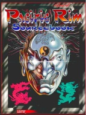

|  | Technical data |
| Supplement for the role-playing game Cyberpunk 2020, published by R. Talsorian Games (1994) | |
| Theme | Southeast Asia in 2020 |
| Background quality | 4 / 5 |
| Scenario quality | - |
| Rules quality | 1 / 5 |
| Artworks quality | 4 / 5 |
| Writing quality | 4 / 5 |
Southeast Asia is not left out since this copious supplement aims to cover this entire part of the world : Korea, Japan, China, Taiwan, Indochina, the Indonesian archipelagos and the Australian zone. This desire to cover all countries nevertheless pushes the authors to focus on the main countries such as Japan and neglect others such as Cambodia and Laos. If the background of the countries is interesting, I regret that so much space is wasted by the presence of background generation tables for players, which seem to me rather sterile. Also, a space at the end was devoted to the martial arts. It must be said that the authors are visibly misinformed about martial arts and combat sports because if the catalog of traditional weapons is rather complete, the proposed rules are ridiculous (just as they were already in CP2020).
{kind=link}